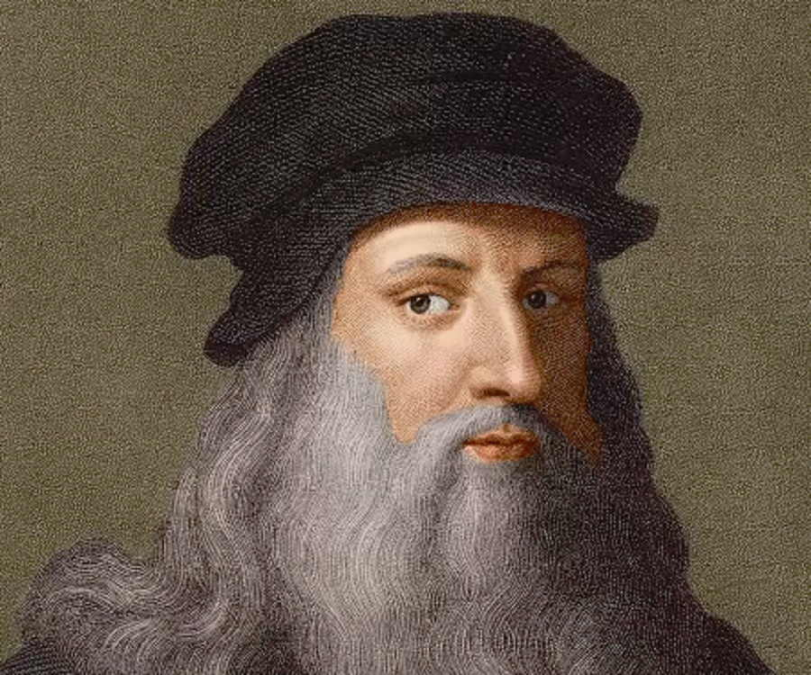

Explore the life of Italian painter, architect, engineer, and humanist Leonardo da Vinci
Leonardo da Vinci (born April 15, 1452, Anchiano, near Vinci, Republic of Florence [Italy]—died May 2, 1519, Cloux [now Clos-Lucé], France) was an Italian painter, draftsman, sculptor, architect, and engineer whose skill and intelligence, perhaps more than that of any other figure, epitomized the Renaissance humanist ideal. His Last Supper (1495–98) and Mona Lisa (c. 1503–19) are among the most widely popular and influential paintings of the Renaissance. His notebooks reveal a spirit of scientific inquiry and a mechanical inventiveness that were centuries ahead of their time.
Leonardo da Vinci (1452–1519) was an Italian polymath, regarded as the epitome of the "Renaissance Man", displaying skills in numerous diverse areas of study. While most famous for his paintings such as the Mona Lisa and the Last Supper, Leonardo is also renowned in the fields of civil engineering, chemistry, geology, geometry, hydrodynamics, mathematics, mechanical engineering, optics, physics, pyrotechnics, and zoology.